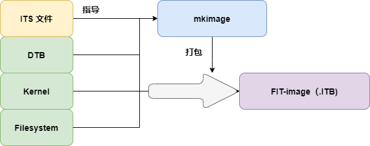

uboot-FIT-image 学习
背景
FIT image 是嵌入式常用的 bootloader 为了响应 ARM Unify Kernel 而推出的一种镜像格式，其本质是内核、设备树、文件系统合并成一个文件的镜像，并且其中可能包含多个内核、设备树、文件系统等。
Unify Kernel 是指将同一内核运行在不同的硬件平台之上。即编译 Linux 内核无需指定具体架构和SOC，其如何兼容不同开发板、平台由 DTB 完成。Bootloader 在启动时，根据硬件环境、选择不同的 DTB 文件，即可使 Linux Kernel 运行在不同的硬件平台上。
FIT-image 简介
正如上所说，为了支持 ARM 的 Unify Kernel 构想，需求 Bootloader 提供选择不同 DTB 的能力，过去我们一般都是自行通过 FATLOAD 将需要的 DTB 加载到内存的指定位置，然后通过 BOOTM {Kernel_addr} - {DTB_addr} 来完成这项工作的。
Uboot 为了简化这种过程，推出了全新的 Image 格式 —— FIT uimage，来自动化上述过程。其中 FIT 是指 Flattened Image Tree，其名酷似 Flattened Device Tree，其实是因为其正是利用了 Device Tree Source Files (DTS) 的语法来编写 ITS（image Source File），最终生成的 image 文件也类似于 DTB，叫做 ITB。
FIT-image 制作过程

ITS文件和DTS类似，描述要生成的 Image File 的信息，mkimage 利用 ITS 提供的信息将 ITS本身、Kernel、文件系统、设备树打包为一个 FIT image，一般以 .itb 为后缀。将此 Image 加载到内存，直接使用 Bootm 即可执行，至于将内核加载到哪里、设备树加载到哪里、入口地址是什么都由 Uboot 读取此镜像中的 ITS 来自动完成。
ITS 语法
如前所说，ITS 语法和 DTS 完全一样，新增了一些特有节点，例如 Images、Configurations等，将这些特有节点说明如下：
Images
指定生成的 FIT-image 所要包含的二进制文件，可以指定多种类型（kernel、DTB、Filesystem）的多个文件。例如示例 multi.its 中就在一个 FIT-image 中包含了 3 个 Kernel、 2 个 ram文件系统、2 个 设备树。其中每个文件都是 Images 下的子节点，例如1
2
3
4
5
6
7
8
9
10
11
12
13
14
15
16
17
18
19
20
21
22
23
24
25images {
kernel@1 {
description = "vanilla-2.6.23";
data = /incbin/("./vmlinux.bin.gz");
type = "kernel";
arch = "ppc";
os = "linux";
compression = "gzip";
load = <00000000>;
entry = <00000000>;
hash@1 {
algo = "md5";
};
hash@2 {
algo = "sha1";
};
};
kernel@2 {
...
};
fdt@1 {
...
};
...
};
关键字解释如下：1
2
3
4
5
6
7
8
9description，描述，可以随便写；
data，二进制文件的路径，格式为----/incbin/("path/to/data/file.bin")；
type，二进制文件的类型，"kernel", "ramdisk", "flat_dt"等
arch，平台类型，“arm”, “i386”等，
os，操作系统类型，linux、vxworks等
compression，二进制文件的压缩格式，u-boot会按照执行的格式解压；
load，二进制文件的加载位置，u-boot会把它copy对应的地址上；
entry，二进制文件入口地址，一般kernel Image需要提供，u-boot会跳转到该地址上执行；
hash，使用的数据校验算法。
完整介绍参考source_file_format
Configurations
Images 只是把二进制内容按要求打包并记录加载配置，具体启动时加载哪些、执行哪些则由此项控制。uboot 在 boot 时就以配置项为单位进行加载执行、达到根据不同场景选择不同配置的情形，达到了 Unify kernel 的目标，这一部分比较简单，给个示例就能看懂，示例如下：
1 | configurations { |
此示例包含了三个配置，指定 config@1 为默认配置，即如果 Bootm 不指定配置，则默认启用 config@1。
FIT image 编译使用
编译
如前所述，mkimage 使用 its 文件打包二进制文件，因而编译命令为 $ mkimage -f {its_name}.its {target_name}.itb
使用
- 根据加载时介质的格式（FAT\EXT4）使用 fatload\ext4load 将 itb 文件加载到指定内存地址。
- 使用
bootm {itb加载地址}执行 FIT image 的默认配置，或者使用bootm {itb加载地址}#{configurations子节点名}来执行 FIT image 的指定配置。
示例
1 | mkimage -f test.its test.itb |
总结
这个文件格式还是很值得学习的，即使不用其来做 Unify Kernel，用其来自动加载不同二进制到不同位置并启动也是很方便的。